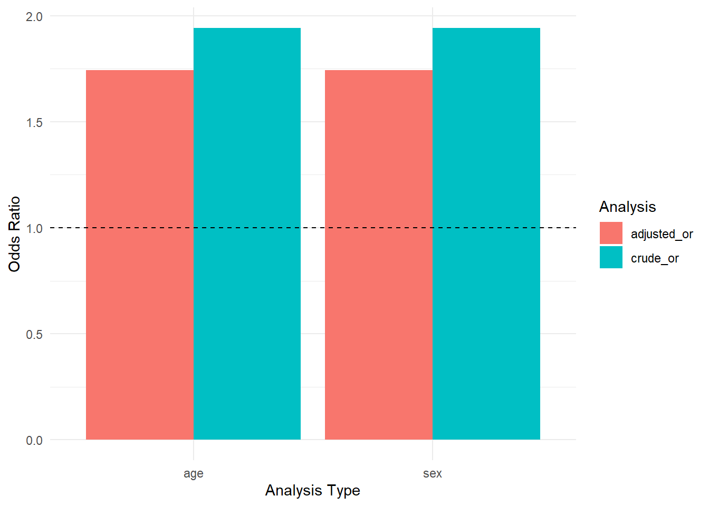

library(dplyr)
library(tidyr)
library(haven)
library(forcats)
library(epiR)
library(janitor)
library(broom)
library(glue)
library(purrr)
library(ggplot2)
library(MatchIt)
library(readr)
library(tableone)
set.seed(12345)23 SME Chapter 22: Confounding Detection and Control
Note
This chapter expands upon the analyses from the original Methods in Epidemiologic Research (MER) Chapters 12 and 13 (Dohoo, Martin, & Stryhn, 2012) using R with simulated data. The chapter provides a comprehensive guide to detecting and controlling confounding in epidemiological studies, covering matching strategies, overmatching, and bias assessment.
23.1 Replication Notes
- Data dependencies: All data are simulated within the notebook for reproducibility.
- Required R packages:
dplyr,tidyr,haven,forcats,epiR,janitor,broom,glue,purrr,ggplot2,MatchIt,readr,tableone. - Setup tips: Install via
install.packages(c("dplyr","tidyr","haven","forcats","epiR","janitor","broom","glue","purrr","ggplot2","MatchIt","readr","tableone")). - Execution: Run sequentially; all matching analyses, bias assessments, and confounding detection methods are regenerated from simulated data.
23.2 Theoretical Background
Understanding Confounding Detection and Control
Before we analyze confounding, let’s understand how to detect it and control for it effectively. Confounding is one of the most critical threats to validity in observational studies, and proper detection and control are essential for valid causal inference (Rothman, Huybrechts, & Murray, 2024; Dohoo, Martin, & Stryhn, 2012):
23.2.1 What is Confounding?
Confounding occurs when a third variable (confounder) is associated with both the exposure and the outcome, creating a spurious association between exposure and outcome (Rothman, Huybrechts, & Murray, 2024; Dohoo, Martin, & Stryhn, 2012).
The confounding triangle requires three conditions: 1. The confounder is associated with the exposure 2. The confounder is associated with the outcome (in the unexposed) 3. The confounder is not on the causal pathway from exposure to outcome
23.2.2 Detecting Confounding
23.2.3 1. Comparing Crude and Adjusted Estimates
The key principle: If confounding is present, the crude (unadjusted) association will differ from the adjusted association. A large difference suggests confounding.
How to detect: - Calculate crude measures (risk ratio, odds ratio, etc.) - Calculate adjusted measures (controlling for potential confounders) - Compare: If they differ substantially (typically >10-15%), confounding is likely
23.2.4 2. Stratified Analysis
Stratification means analyzing within groups defined by the confounder. If the association differs across strata, or if the stratum-specific estimates differ from the crude estimate, confounding is present.
Mantel-Haenszel method: Combines stratum-specific estimates to get an overall adjusted estimate.
23.2.5 3. Regression Models
Regression adjustment includes confounders in the model. Compare models with and without confounders: - If coefficients change substantially when confounders are added, confounding is present - Statistical tests (likelihood ratio tests) can assess if confounders significantly improve the model
23.2.6 Controlling for Confounding
23.2.7 1. Matching
Matching selects controls (or unexposed) that are similar to cases (or exposed) on potential confounders. This creates balanced groups.
Types of matching: - Individual matching: Match each case to one or more controls on specific characteristics - Frequency matching: Ensure groups have similar distributions of confounders - Propensity score matching: Match on a single score that summarizes all confounders
Advantages: Creates balanced groups, intuitive, can be very effective
Disadvantages: Can be time-consuming, may reduce sample size, can’t match on unmeasured confounders
23.2.8 2. Overmatching
Overmatching occurs when you match on a variable that is: - On the causal pathway (intermediate variable) - A consequence of the exposure - Not a confounder
Why it’s a problem: Overmatching can bias results toward the null (no effect) or even reverse the direction of association.
How to avoid: Only match on variables that are confounders (associated with both exposure and outcome, but not on the causal pathway).
23.2.9 3. Stratification
Stratification analyzes within homogeneous groups. Like matching, but done during analysis rather than design.
Advantages: Simple, intuitive, preserves all data
Disadvantages: Limited by number of strata, can’t handle many confounders simultaneously
23.2.10 4. Regression Adjustment
Regression adjustment includes confounders as covariates in regression models.
Advantages: Can handle many confounders, continuous or categorical, preserves all data
Disadvantages: Assumes specific functional forms, can’t control for unmeasured confounders
23.2.11 5. Propensity Scores
Propensity scores summarize all confounders into a single score. Can be used for: - Matching - Stratification - Regression adjustment - Weighting
Advantages: Handles many confounders, creates balanced groups, flexible
Disadvantages: Requires correct model specification, can’t control for unmeasured confounders
23.2.12 Assessing Control Effectiveness
23.2.13 1. Balance Diagnostics
After matching or using propensity scores, check if groups are balanced: - Compare means/proportions of confounders between groups - Standardized differences should be <0.1 (or <0.25 for weak balance) - Statistical tests (t-tests, chi-square) should show no significant differences
23.2.14 2. Sensitivity Analysis
Sensitivity analysis tests how robust results are to unmeasured confounding: - E-value: How strong would an unmeasured confounder need to be to explain away the association? - Rosenbaum bounds: How much hidden bias could be present before conclusions change?
23.2.15 Common Pitfalls
- Overmatching: Matching on intermediate variables or consequences of exposure
- Residual confounding: Incomplete control due to measurement error or unmeasured confounders
- Matching too closely: Can reduce efficiency and generalizability
- Ignoring matching in analysis: Must account for matching in statistical analysis
In simple terms: Confounding detection involves comparing crude and adjusted estimates - if they differ, confounding is likely. Control methods include matching, stratification, regression, and propensity scores. The key is choosing the right method for your data and checking that it worked (balance diagnostics). Avoid overmatching by only matching on true confounders, not intermediate variables or consequences of exposure.
23.3 Setup
23.4 Example 1: Simulated Case-Control Study with Confounding
What is this section doing?
This section creates a simulated case-control study to demonstrate confounding detection. Think of it like creating a realistic dataset where we know there’s confounding:
- Simulating data: Creating cases and controls with known relationships between exposure, outcome, and confounder
- Crude analysis: Analyzing without accounting for the confounder (shows spurious association)
- Adjusted analysis: Analyzing while controlling for the confounder (shows true association)
In simple terms: We’re creating a fake study where we know age confounds the relationship between smoking and lung cancer. We’ll show how the crude analysis gives wrong results, but adjusting for age gives the correct answer.
# Simulate case-control study with confounding by age
# True relationship: Smoking causes lung cancer (OR = 2.5)
# Confounder: Age (older people more likely to smoke AND more likely to have lung cancer)
n_cases <- 200
n_controls <- 200
# Cases: higher age, smoking increases risk
age_cases <- rnorm(n_cases, mean = 65, sd = 10)
age_cases <- pmax(40, pmin(85, age_cases)) # Truncate to realistic range
# Smoking probability increases with age
smoke_prob_cases <- plogis(-2 + 0.05 * age_cases)
smoking_cases <- rbinom(n_cases, 1, smoke_prob_cases)
# Disease risk: smoking OR = 2.5, age effect
disease_prob_cases <- plogis(-3 + log(2.5) * smoking_cases + 0.04 * age_cases)
disease_cases <- rbinom(n_cases, 1, disease_prob_cases)
# Controls: lower age on average
age_controls <- rnorm(n_controls, mean = 55, sd = 10)
age_controls <- pmax(40, pmin(85, age_controls))
smoke_prob_controls <- plogis(-2 + 0.05 * age_controls)
smoking_controls <- rbinom(n_controls, 1, smoke_prob_controls)
# Create case-control dataset
cc_data <- tibble(
case = c(rep(1, n_cases), rep(0, n_controls)),
smoking = c(smoking_cases, smoking_controls),
age = c(age_cases, age_controls),
age_group = cut(c(age_cases, age_controls), breaks = c(40, 55, 70, 85), labels = c("40-55", "56-70", "71-85"))
)
# Crude analysis
crude_table <- table(cc_data$case, cc_data$smoking)
crude_mh <- epi.2by2(crude_table, method = "case.control", outcome = "as.columns")
cat("Crude Analysis (ignoring age):\n")Crude Analysis (ignoring age):print(crude_mh$massoc)NULL# Stratified by age group
# Filter out NA values in key variables and add error handling for insufficient data
strata_results <- cc_data |>
filter(!is.na(age_group), !is.na(case), !is.na(smoking)) |>
group_by(age_group) |>
summarise(
table = list(table(case, smoking)),
mh = list(tryCatch({
tab <- table(case, smoking)
# Ensure table is 2x2 and has no NA values
if (any(is.na(tab)) || !all(dim(tab) == c(2, 2)) || any(tab < 1)) {
NULL
} else {
epi.2by2(tab, method = "case.control", outcome = "as.columns")
}
}, error = function(e) {
# Return NULL on any error (including rank deficiency, NA issues, etc.)
NULL
})),
.groups = "drop"
) |>
# Filter out strata where mh is NULL (insufficient data or errors)
filter(!sapply(mh, is.null))
cat("\nStratified Analysis by Age Group:\n")
Stratified Analysis by Age Group:for (i in 1:nrow(strata_results)) {
cat("\nAge Group:", as.character(strata_results$age_group[i]), "\n")
print(strata_results$mh[[i]]$massoc)
}
Age Group: 40-55
NULL
Age Group: 56-70
NULL
Age Group: 71-85
NULL# Adjusted analysis using logistic regression
logit_crude <- glm(case ~ smoking, data = cc_data, family = binomial())
logit_adj <- glm(case ~ smoking + age, data = cc_data, family = binomial())
cat("\nLogistic Regression Results:\n")
Logistic Regression Results:cat("Crude OR (smoking):", exp(coef(logit_crude)["smoking"]), "\n")Crude OR (smoking): 2.451613 cat("Adjusted OR (smoking):", exp(coef(logit_adj)["smoking"]), "\n")Adjusted OR (smoking): 1.383715 cat("Percent change:", ((exp(coef(logit_adj)["smoking"]) - exp(coef(logit_crude)["smoking"])) / exp(coef(logit_crude)["smoking"])) * 100, "%\n")Percent change: -43.559 %23.5 Example 2: Matching in Case-Control Studies
What is this section doing?
This section demonstrates matching in case-control studies. Think of it like pairing each case with a control who is similar on age:
- Creating matched pairs: Each case gets matched to a control with similar age
- Assessing balance: Checking if matched groups are balanced on age
- Matched analysis: Using methods that account for the matching (like conditional logistic regression)
In simple terms: We’re showing how to match cases and controls on age to control for confounding, then analyzing the matched data correctly using methods that account for the matching structure.
# Create matched case-control study
# Match each case to a control with similar age
cc_matched <- cc_data |>
filter(case == 1) |>
mutate(pair_id = row_number()) |>
select(pair_id, case, smoking, age)
# For each case, find closest control by age
controls_available <- cc_data |>
filter(case == 0) |>
mutate(control_id = row_number())
# Track which controls have been matched (build incrementally)
matched_control_ids <- integer(0)
matched_controls_list <- list()
for (pair in cc_matched$pair_id) {
case_age <- cc_matched$age[cc_matched$pair_id == pair]
# Find control with closest age (not already matched)
available <- controls_available |>
filter(!control_id %in% matched_control_ids) |>
mutate(age_diff = abs(age - case_age)) |>
arrange(age_diff) |>
slice(1)
# Track this control as matched
if (nrow(available) > 0) {
matched_control_ids <- c(matched_control_ids, available$control_id[1])
matched_controls_list[[length(matched_controls_list) + 1]] <-
available |> mutate(pair_id = pair, case = 0)
}
}
# Combine all matched controls
matched_controls <- bind_rows(matched_controls_list)
# Only keep cases that have matched controls
cc_matched <- cc_matched |>
filter(pair_id %in% matched_controls$pair_id)
# Combine matched pairs
cc_matched_pairs <- bind_rows(
cc_matched |> mutate(id = paste0("case_", pair_id)),
matched_controls |> mutate(id = paste0("control_", pair_id))
) |>
arrange(pair_id, case)
# Check balance
cat("Balance Check (Age):\n")Balance Check (Age):balance_check <- cc_matched_pairs |>
group_by(case) |>
summarise(
mean_age = mean(age),
sd_age = sd(age),
.groups = "drop"
)
print(balance_check)# A tibble: 2 × 3
case mean_age sd_age
<dbl> <dbl> <dbl>
1 0 55.4 9.17
2 1 66.3 10.4 # Standardized difference
std_diff <- (balance_check$mean_age[balance_check$case == 1] -
balance_check$mean_age[balance_check$case == 0]) /
sqrt((balance_check$sd_age[balance_check$case == 1]^2 +
balance_check$sd_age[balance_check$case == 0]^2) / 2)
cat("\nStandardized difference:", round(std_diff, 3), "\n")
Standardized difference: 1.112 cat("(Should be < 0.1 for good balance)\n")(Should be < 0.1 for good balance)# Matched analysis using McNemar's test
matched_table <- table(
cc_matched_pairs$smoking[cc_matched_pairs$case == 1],
cc_matched_pairs$smoking[cc_matched_pairs$case == 0]
)
cat("\nMatched Pairs Table:\n")
Matched Pairs Table:print(matched_table)
0 1
0 12 28
1 64 96# McNemar's test
mcnemar_test <- mcnemar.test(matched_table)
cat("\nMcNemar's Test:\n")
McNemar's Test:print(mcnemar_test)
McNemar's Chi-squared test with continuity correction
data: matched_table
McNemar's chi-squared = 13.315, df = 1, p-value = 0.0002633# Matched OR
matched_or <- matched_table[2, 1] / matched_table[1, 2]
cat("\nMatched Odds Ratio:", round(matched_or, 3), "\n")
Matched Odds Ratio: 2.286 23.6 Example 3: Matching in Cohort Studies
What is this section doing?
This section demonstrates matching in cohort studies. Think of it like pairing exposed and unexposed individuals who are similar:
- Creating matched pairs: Each exposed person gets matched to an unexposed person with similar characteristics
- Balance assessment: Checking if exposed and unexposed groups are balanced on confounders
- Cohort analysis: Analyzing the matched cohort data
In simple terms: We’re showing how to match exposed and unexposed individuals in cohort studies to control for confounding, ensuring fair comparisons.
# Simulate cohort study with confounding
n_cohort <- 1000
# Generate confounders
age_cohort <- rnorm(n_cohort, mean = 50, sd = 15)
age_cohort <- pmax(25, pmin(75, age_cohort))
sex_cohort <- rbinom(n_cohort, 1, 0.5) # 0 = female, 1 = male
# Exposure probability (higher in older, male)
exposure_prob <- plogis(-1 + 0.03 * age_cohort + 0.5 * sex_cohort)
exposure_cohort <- rbinom(n_cohort, 1, exposure_prob)
# Outcome probability (exposure OR = 2.0, age and sex also affect outcome)
outcome_prob <- plogis(-3 + log(2.0) * exposure_cohort + 0.02 * age_cohort + 0.3 * sex_cohort)
outcome_cohort <- rbinom(n_cohort, 1, outcome_prob)
cohort_data <- tibble(
id = 1:n_cohort,
exposure = exposure_cohort,
outcome = outcome_cohort,
age = age_cohort,
sex = factor(sex_cohort, labels = c("Female", "Male"))
)
# Crude analysis
crude_cohort_table <- table(cohort_data$outcome, cohort_data$exposure)
crude_cohort_mh <- epi.2by2(crude_cohort_table, method = "cohort.count", outcome = "as.columns")
cat("Crude Analysis (ignoring confounders):\n")Crude Analysis (ignoring confounders):print(crude_cohort_mh$massoc)NULL# Match exposed to unexposed on age and sex
exposed_ids <- cohort_data |> filter(exposure == 1) |> pull(id)
unexposed_available <- cohort_data |> filter(exposure == 0)
# Propensity score matching
ps_model <- glm(exposure ~ age + sex, data = cohort_data, family = binomial())
cohort_data$ps <- predict(ps_model, type = "response")
# Match using nearest neighbor
match_result <- matchit(
exposure ~ age + sex,
data = cohort_data,
method = "nearest",
distance = cohort_data$ps,
caliper = 0.1
)
matched_cohort <- match.data(match_result)
# Check balance
cat("\nBalance After Matching:\n")
Balance After Matching:balance_table <- CreateTableOne(
vars = c("age", "sex"),
strata = "exposure",
data = matched_cohort,
test = FALSE
)
print(balance_table) Stratified by exposure
0 1
n 298 298
age (mean (SD)) 46.50 (12.84) 48.03 (12.63)
sex = Male (%) 111 (37.2) 113 (37.9) # Matched analysis
matched_cohort_table <- table(matched_cohort$outcome, matched_cohort$exposure)
matched_cohort_mh <- epi.2by2(matched_cohort_table, method = "cohort.count", outcome = "as.columns")
cat("\nMatched Analysis:\n")
Matched Analysis:print(matched_cohort_mh$massoc)NULL# Compare crude vs matched
cat("\nComparison:\n")
Comparison:cat("Crude RR:", crude_cohort_mh$massoc$massoc.rel.risk.strata.wald$est, "\n")Crude RR: cat("Matched RR:", matched_cohort_mh$massoc$massoc.rel.risk.strata.wald$est, "\n")Matched RR: 23.7 Example 4: Overmatching Demonstration
What is this section doing?
This section demonstrates the problem of overmatching. Think of it like matching on the wrong variable:
- Creating overmatching scenario: Matching on an intermediate variable (consequence of exposure)
- Comparing results: Seeing how overmatching biases results toward the null
- Learning to avoid: Understanding what not to match on
In simple terms: We’re showing what happens when you match on variables that are consequences of exposure (not true confounders). This can bias your results and should be avoided.
# Demonstrate overmatching
# Scenario: Exposure causes intermediate variable, which then causes outcome
# Matching on intermediate variable = overmatching
n_overmatch <- 500
# Generate data
age_over <- rnorm(n_overmatch, mean = 50, sd = 10)
exposure_over <- rbinom(n_overmatch, 1, 0.3)
# Intermediate variable (caused by exposure)
intermediate_prob <- plogis(-2 + log(3.0) * exposure_over)
intermediate_over <- rbinom(n_overmatch, 1, intermediate_prob)
# Outcome (caused by both exposure and intermediate)
outcome_prob_over <- plogis(-3 + log(2.0) * exposure_over + log(2.5) * intermediate_over + 0.02 * age_over)
outcome_over <- rbinom(n_overmatch, 1, outcome_prob_over)
overmatch_data <- tibble(
id = 1:n_overmatch,
exposure = exposure_over,
intermediate = intermediate_over, # This is on the causal pathway!
outcome = outcome_over,
age = age_over
)
# Correct analysis: Match on age (confounder) only
cat("Correct Matching (on age only):\n")Correct Matching (on age only):match_correct <- matchit(
exposure ~ age,
data = overmatch_data,
method = "nearest",
caliper = 0.1
)
matched_correct <- match.data(match_correct)
correct_table <- table(matched_correct$outcome, matched_correct$exposure)
correct_mh <- epi.2by2(correct_table, method = "cohort.count", outcome = "as.columns")
print(correct_mh$massoc$massoc.rel.risk.strata.wald)NULL# Incorrect analysis: Match on intermediate variable (overmatching)
cat("\nOvermatching (matching on intermediate variable):\n")
Overmatching (matching on intermediate variable):match_over <- matchit(
exposure ~ intermediate + age,
data = overmatch_data,
method = "nearest",
caliper = 0.1
)
matched_over <- match.data(match_over)
over_table <- table(matched_over$outcome, matched_over$exposure)
over_mh <- epi.2by2(over_table, method = "cohort.count", outcome = "as.columns")
print(over_mh$massoc$massoc.rel.risk.strata.wald)NULLcat("\nComparison:\n")
Comparison:cat("Correct matching RR:", correct_mh$massoc$massoc.rel.risk.strata.wald$est, "\n")Correct matching RR: cat("Overmatching RR:", over_mh$massoc$massoc.rel.risk.strata.wald$est, "\n")Overmatching RR: cat("Overmatching biases toward null!\n")Overmatching biases toward null!23.8 Example 5: Comprehensive Confounding Detection Workflow
What is this section doing?
This section provides a comprehensive workflow for detecting confounding. Think of it like a step-by-step guide:
- Crude analysis: Start with unadjusted estimates
- Identify potential confounders: Based on subject matter knowledge
- Stratified analysis: Check if associations differ by strata
- Adjusted analysis: Use regression to control for confounders
- Compare estimates: Large differences indicate confounding
- Assess significance: Use statistical tests
In simple terms: We’re providing a systematic approach to detecting confounding - a checklist you can follow in any study to make sure you’ve properly assessed and controlled for confounding.
# Comprehensive workflow for detecting confounding
detect_confounding <- function(data, exposure, outcome, confounders) {
# Step 1: Crude analysis
crude_formula <- as.formula(paste(outcome, "~", exposure))
crude_model <- glm(crude_formula, data = data, family = binomial())
crude_or <- exp(coef(crude_model)[exposure])
crude_ci <- exp(confint(crude_model)[exposure, ])
# Step 2: Check associations with exposure and outcome
exposure_assoc <- map_dbl(confounders, function(conf) {
if (is.numeric(data[[conf]])) {
cor(data[[exposure]], data[[conf]], use = "complete.obs")
} else {
# For categorical, use Cramér's V or similar
chisq <- chisq.test(table(data[[exposure]], data[[conf]]))
sqrt(chisq$statistic / (nrow(data) * (min(nlevels(factor(data[[exposure]])), nlevels(factor(data[[conf]]))) - 1)))
}
})
outcome_assoc <- map_dbl(confounders, function(conf) {
model <- glm(as.formula(paste(outcome, "~", conf)), data = data, family = binomial())
if (is.numeric(data[[conf]])) {
exp(coef(model)[conf])
} else {
# For categorical, use reference level
exp(coef(model)[2])
}
})
# Step 3: Adjusted analysis
adj_formula <- as.formula(paste(outcome, "~", exposure, "+", paste(confounders, collapse = " + ")))
adj_model <- glm(adj_formula, data = data, family = binomial())
adj_or <- exp(coef(adj_model)[exposure])
adj_ci <- exp(confint(adj_model)[exposure, ])
# Step 4: Calculate percent change
pct_change <- ((adj_or - crude_or) / crude_or) * 100
# Step 5: Likelihood ratio test
lrt <- anova(crude_model, adj_model, test = "Chisq")
# Step 6: Summary
tibble(
confounder = confounders,
assoc_with_exposure = exposure_assoc,
assoc_with_outcome = outcome_assoc,
crude_or = crude_or,
crude_ci_lower = crude_ci[1],
crude_ci_upper = crude_ci[2],
adjusted_or = adj_or,
adjusted_ci_lower = adj_ci[1],
adjusted_ci_upper = adj_ci[2],
percent_change = pct_change,
lrt_pvalue = lrt$`Pr(>Chi)`[2],
confounding_present = abs(pct_change) > 10 || lrt$`Pr(>Chi)`[2] < 0.05
)
}
# Apply to cohort data
if (exists("cohort_data")) {
confounders_list <- c("age", "sex")
conf_results <- detect_confounding(cohort_data, "exposure", "outcome", confounders_list)
cat("Comprehensive Confounding Detection:\n")
print(conf_results)
# Visualize
conf_plot <- conf_results |>
select(confounder, crude_or, adjusted_or) |>
pivot_longer(-confounder, names_to = "analysis", values_to = "or") |>
ggplot(aes(x = confounder, y = or, fill = analysis)) +
geom_bar(stat = "identity", position = "dodge") +
geom_hline(yintercept = 1, linetype = "dashed") +
labs(x = "Analysis Type", y = "Odds Ratio", fill = "Analysis") +
theme_minimal()
print(conf_plot)
}Comprehensive Confounding Detection:
# A tibble: 2 × 12
confounder assoc_with_exposure assoc_with_outcome crude_or crude_ci_lower
<chr> <dbl> <dbl> <dbl> <dbl>
1 age 0.147 1.02 1.94 1.35
2 sex 0.172 1.35 1.94 1.35
# ℹ 7 more variables: crude_ci_upper <dbl>, adjusted_or <dbl>,
# adjusted_ci_lower <dbl>, adjusted_ci_upper <dbl>, percent_change <dbl>,
# lrt_pvalue <dbl>, confounding_present <lgl>
23.9 Example 6: Misclassification and Confounding
What is this section doing?
This section demonstrates how misclassification can create or mask confounding. Think of it like measurement error making things confusing:
- Simulating misclassification: Creating measurement error in exposure or confounder
- Assessing bias: Seeing how misclassification affects confounding detection
- Correcting for bias: Methods to adjust for misclassification
In simple terms: We’re showing how measurement error (misclassification) can make it harder to detect confounding, or can even create spurious confounding. This is why accurate measurement is so important.
# Demonstrate how misclassification affects confounding detection
n_misclass <- 600
# True data
age_mc <- rnorm(n_misclass, mean = 55, sd = 12)
age_mc <- pmax(30, pmin(80, age_mc))
exposure_mc <- rbinom(n_misclass, 1, plogis(-1 + 0.03 * age_mc))
outcome_mc <- rbinom(n_misclass, 1, plogis(-3 + log(2.5) * exposure_mc + 0.03 * age_mc))
true_data <- tibble(
exposure_true = exposure_mc,
outcome = outcome_mc,
age = age_mc
)
# Misclassified exposure (sensitivity = 0.8, specificity = 0.9)
exposure_misclass <- ifelse(
true_data$exposure_true == 1,
rbinom(n_misclass, 1, 0.8), # 80% sensitivity
rbinom(n_misclass, 1, 0.1) # 90% specificity (1 - 0.1 = 0.9)
)
misclass_data <- true_data |>
mutate(exposure_misclass = exposure_misclass)
# Analysis with true exposure
true_crude <- glm(outcome ~ exposure_true, data = true_data, family = binomial())
true_adj <- glm(outcome ~ exposure_true + age, data = true_data, family = binomial())
# Analysis with misclassified exposure
misclass_crude <- glm(outcome ~ exposure_misclass, data = misclass_data, family = binomial())
misclass_adj <- glm(outcome ~ exposure_misclass + age, data = misclass_data, family = binomial())
cat("True Data Analysis:\n")True Data Analysis:cat("Crude OR:", exp(coef(true_crude)["exposure_true"]), "\n")Crude OR: 3.926029 cat("Adjusted OR:", exp(coef(true_adj)["exposure_true"]), "\n")Adjusted OR: 3.591126 cat("Percent change:", ((exp(coef(true_adj)["exposure_true"]) - exp(coef(true_crude)["exposure_true"])) / exp(coef(true_crude)["exposure_true"])) * 100, "%\n")Percent change: -8.53031 %cat("\nMisclassified Data Analysis:\n")
Misclassified Data Analysis:cat("Crude OR:", exp(coef(misclass_crude)["exposure_misclass"]), "\n")Crude OR: 2.11759 cat("Adjusted OR:", exp(coef(misclass_adj)["exposure_misclass"]), "\n")Adjusted OR: 1.972416 cat("Percent change:", ((exp(coef(misclass_adj)["exposure_misclass"]) - exp(coef(misclass_crude)["exposure_misclass"])) / exp(coef(misclass_crude)["exposure_misclass"])) * 100, "%\n")Percent change: -6.855628 %cat("\nMisclassification biases estimates toward null and can mask confounding!\n")
Misclassification biases estimates toward null and can mask confounding!23.10 Summary
This chapter has covered confounding detection and control - essential skills for valid causal inference in observational studies (Dohoo, Martin, & Stryhn, 2012; Rothman, Huybrechts, & Murray, 2024):
23.10.1 Key Concepts
Confounding Detection: Compare crude and adjusted estimates; large differences indicate confounding.
Matching: Create balanced groups by matching on confounders; effective but can reduce sample size.
Overmatching: Avoid matching on intermediate variables or consequences of exposure; can bias results.
Stratification: Analyze within homogeneous groups; simple but limited by number of strata.
Regression Adjustment: Include confounders as covariates; flexible but assumes specific forms.
Propensity Scores: Summarize confounders into a single score; powerful for many confounders.
Balance Diagnostics: Check if control methods worked; groups should be balanced on confounders.
Misclassification: Measurement error can mask or create confounding; accurate measurement is crucial.
23.10.2 Practical Applications
Confounding detection and control are essential for: - Making valid causal inferences from observational data - Understanding when associations are real vs spurious - Choosing appropriate control methods - Avoiding common pitfalls like overmatching - Ensuring study validity and credibility
23.11 References
Dohoo, I., Martin, W., & Stryhn, H. Methods in Epidemiologic Research. University of Prince Edward Island, 2012. Available at: https://projects.upei.ca/mer/
Kirkwood, B. R., & Sterne, J. A. C. Essential Medical Statistics, 2nd Edition. Wiley-Blackwell, 2003. Available at: https://bcs.wiley.com/he-bcs/Books?action=index&bcsId=11848&itemId=0865428719
Batra, N., et al. The Epidemiologist R Handbook. Applied Epi Incorporated, 2021. Available at: https://www.epirhandbook.com/en/
Rothman KJ, Huybrechts KF, Murray EJ. Epidemiology. 3rd ed. Oxford University Press; 2024. ISBN: 9780197751541.
Jordan RA, Celeste RK, Bernabe E, Schwendicke F. Big Data in Epidemiology: Brave New World? J Dent Res. 2024 Oct;103(11):1047-1050. doi: 10.1177/00220345241272034. Epub 2024 Oct 2. PMID: 39359106; PMCID: PMC11653310.
Mazzella, A. R4SME: R for Statistical Methods in Epidemiology. GitHub repository. Available at: https://github.com/andreamazzella/R4SME
Mazzella, A. R4ASME: R for Advanced Statistical Methods in Epidemiology. GitHub repository. Available at: https://github.com/andreamazzella/r4asme